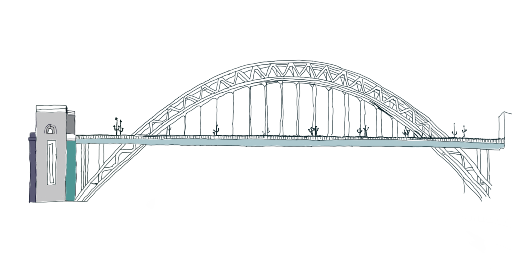
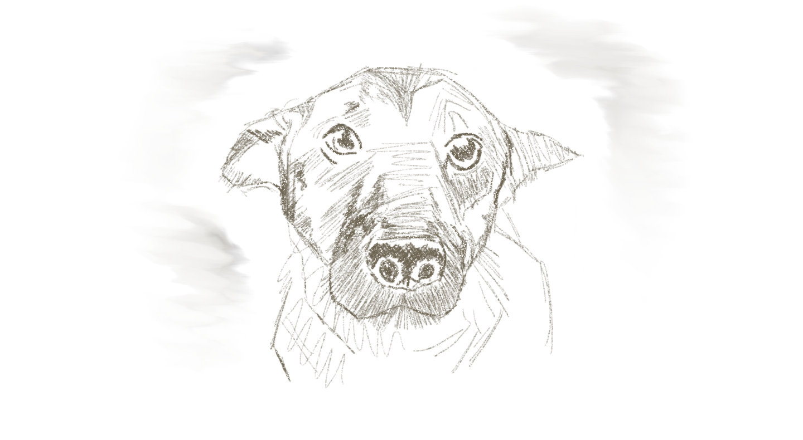
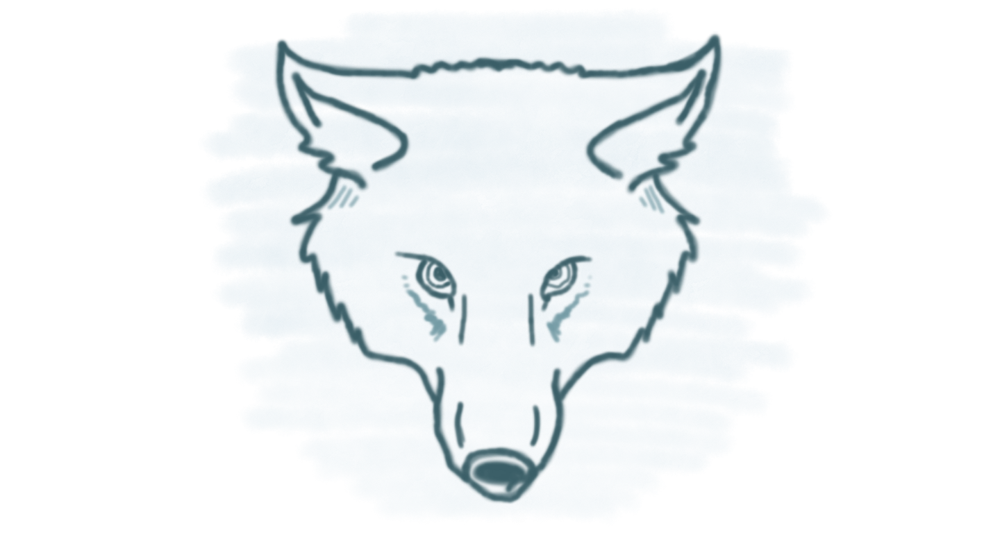
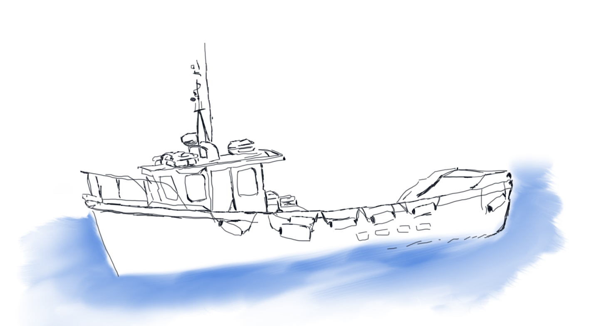
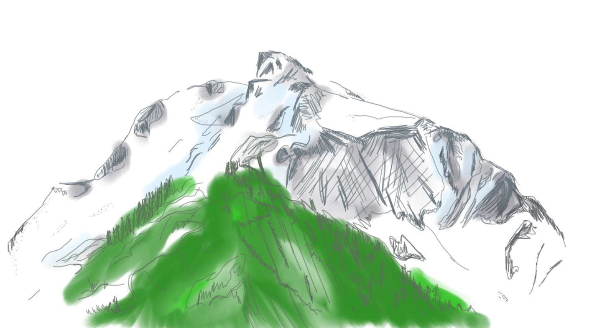
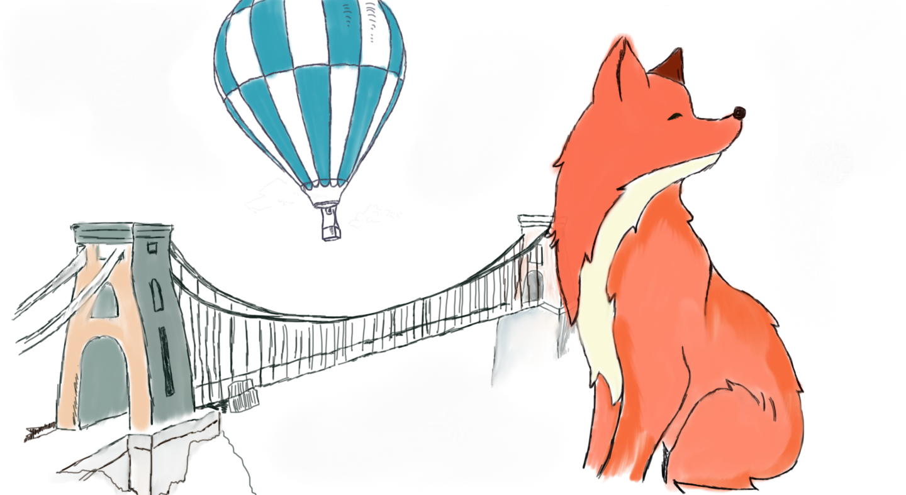

I'm currently studying for my PhD at Newcastle University. My project aims to understand the drivers of sociality in carnivore species. My research has a particular focus on behaviours relating to food aquisition, territorial defence and predator defence as well as investigating the evolutionary consequences of sociality. My project examines the relationships between factors influencing sociality by using a range of modelling approaches so that we can better understand how to protect and conserve threatened carnivore species.

Before starting my PhD I spent a year working two jobs, one as a research assistant at Newcastle University, and one as a STEM Ambassador for Fusion STEM. Working at the university I was able to get involved in numerous projects from modelling campylobacter cases in humans Paper to coordinating invasive species workshops. As a STEM ambassador I got to develop my teaching and general #scicomm skills running after school science clubs to show how much fun science can be.
Having finished my undergraduate studies I wasn't ready to be done with education and enrolled on the Wildlife Management Msc programme. As well as graduating with a distinction and the academic prize for highest achieveing student I got to learn lots about scientific policy through the programmes links with with APHA (government research department). I also had the opportunity to develop a population model to examine rabies transmission amongst free roaming dog populations. This work seeking to aid management of populations became my first conference presentation (BES 2015) which as a lowly Msc student was terrifying but rewarding beyond measure.

I graduated from Newcastle University with first class honours Bsc in zoology. During my undergraduate studies I developed an interest in urban ecology and human wildlife conflicts. I worked on projects that helped me to develop my quantitative skills whilst indulging my interest in urban ecology from modelling fox foraging patterns to investigating factors impacting road mortalities in coyote populations

During my undergraduate studies I spent a summer working with Cardigan Bay Marine Wildlife Centre as a research assistant collecting and organising data, and communicating the centre's research to members of the public. It was an excellent oppourtunity to develop practical skills and attempt to find my sea legs
After finishing school I travelled to Whistler, Canada where I qualified as a CASI level 1 ski instructor and worked for the winter season teaching 3-4 year olds the basics of skiing, mountain safety and the occasional bit of wildlife spotting

I grew up in Bristol surrounded by urban fox populations and hot air balloons, I finished school in 2010 with A Levels in Biology Chemistry and French
